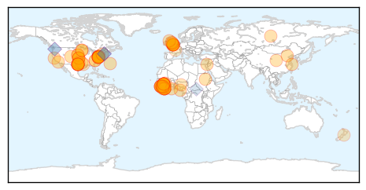
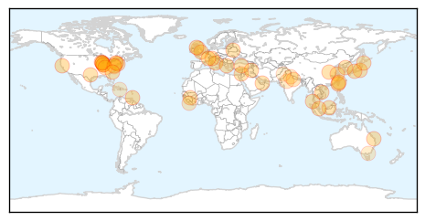

Ebola
30-Day Web Trend
0 alerts, 0 warnings
30-Day Twitter Trend
0 alerts, 0 warnings
Article Locations
Article Confidences

Top Articles:
- 1.000
- EBOLA: Northampton General Hospital is treating a woman with suspected Ebola - how it would deal with a real case
- 1.000
- UK Ebola case confirmed but risk remains low
- 1.000
- Flu, norovirus, Ebola, oh my!
- 1.000
- Ebola survivor Dr. Rick Sacra soon to return to Liberia hot zone
- 1.000
- Ebola cases dropping in all three countries, but hot spots remain
- 1.000
- Liberia, Sierra Leone, Guinea making Ebola strides
- 0.999
- American Soldier’s Corpse Examined For Ebola
- 0.999
- As anxiety wanes, state still on alert for Ebola spread
- 0.999
- Ebola Cases On The Decline In West Africa But One Expert Says The Health System In Place Remains Far From Ideal
- 0.999
- How Bats Can Help And Hurt You
- 0.999
- C.D.C. Chief ‘Confident’ on Ebola
- 0.998
- Liberia Progresses in Fight Against Ebola
- 0.998
- Officials Confirm Death of US Soldier Self-Monitoring for Ebola
- 0.997
- The Royal Gazette:Bermuda Wellness
- 0.997
- Northampton General Hospital confirms suspected Ebola patient
- 0.997
- Colorado Health Officials Follow Strict CDC Ebola Guidelines « CBS Denver
- 0.996
- Ebola Training Continues at the Center for Domestic Preparedness
- 0.995
- Ebola treatment centre for pregnant women opens
- 0.995
- China sends off 4th Ebola aid shipment with 232 medical workers
- 0.995
- Woman Tests Negative For Ebola In Northampton
- 0.993
- Ebola Response Provides Key Lessons for Risk Communications
- 0.992
- Liberia's Ebola Epidemic Could End by Summer, Study Predicts
- 0.991
- Pace of Ebola Epidemic Slows, But Unevenly
- 0.991
- Liberia’s Ebola epidemic could be eliminated by June, researchers say
- 0.991
- UPDATE 1-British hospital says has suspected Ebola case
- 0.990
- Dont Attempt Ebola Treatment -Traditional Healers Urged
- 0.985
- Important Questions and a Few Easy Steps to Stop an American Ebola Outbreak
- 0.983
- CDC calls for French-speaking medical personnel to combat Ebola in Guinea
- 0.982
- Minnesota's bill for Ebola preparations tops $1 million, state expert says
- 0.982
- Ebola strategic plan in the pipeline
- 0.982
- No Sign Of Ebola For CDC Lab Worker Feared Exposed Weeks Ago
- 0.980
- GOP shows solidarity during pre-session luncheon
- 0.980
- Baltimore mayor seeks more federal aid to combat police misconduct
- 0.980
- Judge keeps Bishop Heather Cook's bail at $2.5M
- 0.980
- Teachers union takes to airwaves on school funding
- 0.980
- Food fundraiser Market Day to lay off 26 in Jessup
- 0.980
- Sierra Leone: Ebola Emergency Weekly Situation Report No. 12, 5 - 11 January 2015 - Sierra Leone
- 0.980
- Ebola: doctors from Liberia to help “brothers" - Sierra Leone
- 0.976
- Dead Fort Hood soldier tests negative for Ebola
- 0.975
- Ebola Vaccine Trials in West Africa Slated This Month, According to WHO [News Update] Jan. 2015
- 0.974
- Return to Ebola-affected West Africa
- 0.972
- Sierra Leone district remains Ebola-free for 44 days
- 0.971
- Ebola patient may go home
- 0.971
- Could the Ebola epidemic end this year?
- 0.969
- South Africa: Zuma arrives in Angola for talks with Dos Santos
- 0.968
- CDC Director "Confident" That Global Ebola Cases Can be Reduced to Zero
- 0.962
- Fair Access Medicines and OncoSynergy Partner to Test Experimental Ebola Drug in West Africa
- 0.961
- English hospital investigating suspected Ebola case
- 0.954
- Doctors test woman for Ebola at Northampton General Hospital
- 0.951
- Dissident Iranian Director's Film To Premiere In Berlin
Showing top 50 articles...
Top Tweets:
- 0.954
- Dr. Peter Piot, co-discoverer of Ebola, tells us what went wrong that led to the Ebola outbreak in West Africa. http://t.co/y1TPrRp5f7
- 0.923
- HackAgainstEbola A Dakar, des hackers s’en prennent au virus Ebola http://t.co/Vc8vwKaVdX
- 0.875
- RT: CDC Director - 'zero cases' of Ebola in West Africa possible: http://t.co/bGD4C44ykW AfricaAgainstEbola africastopebola …
- 0.871
- Fewer young kids among Ebola cases in Liberia. 0-14 yr olds are 10% of cases in Liberia, 16% in Guinea, 17.5% in SL. http://t.co/fmzCIrJpat
- 0.833
- Ebola survivors in Sierra Leone key in training health providers http://t.co/4G20BWkc4c reports via TackleEbola
- 0.693
- RT: Fear of Ebola Curtails Female Genital Mutilation, Offers Hope of Curbing ... - Bloomberg http://t.co/qMFfNR24lu ebola EVD
- 0.693
- EbolaNews: Could Liberia be free of the Ebola by May? http://t.co/BRz0KVrtFl
- 0.689
- Liberia. One single case of Ebola can re-start an outbreak anytime, anywhere http://t.co/ocaza0ZOF6
- 0.619
- Tragic story of Sierra Leone's Dr. Humarr Khan, who could have been the 1st person to get ZMapp but died of Ebola. https://t.co/Ml6HcGvOD3
- 0.593
- Good news: Liberia has reported only 48 new Ebola cases in the past 21 days. Bad news: Vaccine trial there will take forever at that rate.
- 0.591
- Awesome! Ugandan doctor springs to action during Ebola outbreak, trains around 1k HCW and saves lives http://t.co/q2rI41hSjl
Unknown
30-Day Web Trend
0 alerts, 0 warnings

30-Day Twitter Trend
2 alerts, 0 warnings

Article Locations
Article Confidences
Top Articles:
- 0.993
- California flu season 'sporadic,' despite reports of severe flu projections
- 0.988
- UF researchers discover new virus in ticks
- 0.987
- Health officials: Indiana flu-related deaths expected to rise
- 0.985
- FDA, CDC take steps to deal with bad flu season
- 0.976
- Glasgow flu vaccines: Half of at risk Glaswegians haven't had their shot at height of sick season
- 0.964
- CDC to parents: Seasonal viruses can mimic flu symptoms
- 0.955
- Indiana health chief: Flu not taken seriously enough
- 0.939
- Doctors urged to prescribe more anti-viral meds to more patients
- 0.936
- Shigella Outbreak Strikes Williamsburg, Borough Park In Brooklyn « CBS New York
- 0.921
- More birds culled as Taiwan battles worst avian flu in 10 years
- 0.919
- Baltic countries continue to struggle with ASF
- 0.917
- Chicago Tribune
- 0.917
- Chicago Tribune
- 0.917
- Chicago Tribune
- 0.917
- Chicago Tribune
- 0.917
- Chicago Tribune
- 0.917
- Chicago Tribune
- 0.917
- Chicago Tribune
- 0.917
- Chicago Tribune
- 0.917
- Chicago Tribune
- 0.917
- Chicago Tribune
- 0.917
- Chicago Tribune
- 0.917
- Chicago Tribune
- 0.917
- Chicago Tribune
- 0.917
- Chicago Tribune
- 0.917
- Chicago Tribune
- 0.917
- Chicago Tribune
- 0.917
- Chicago Tribune
- 0.917
- Chicago Tribune
- 0.917
- Chicago Tribune
- 0.916
- More birds culled as Taiwan battles worst avian flu in 10 years
- 0.910
- The world windows to Thailand
- 0.910
- The world windows to Thailand
- 0.910
- Defeating Disease: Exhibit Shows Guinea Worm's Eradication
- 0.878
- Shigella Outbreak Plagues Williamsburg and Borough Park Children
- 0.866
- SINGAPORE PRESS-Temasek to turn Mandai into nature heritage precinct-Business Times
- 0.866
- Eighteen air strikes target Islamic State in Syria, Iraq
- 0.844
- Hospitals fall short on government's patient safety goal
- 0.805
- Cities unite to fight bird flu outbreak
- 0.789
- 'Fight the Flu' kits help seniors avoid the virus
- 0.772
- Lymphatic filariasis: Govt launches free medicine distribution
- 0.751
- Paralytic Disease Has Sicked 103 Children
- 0.720
- Joint Forces Command United Assistance service members stick to standards
- 0.703
- New York City Health Department Confirms Co-Op City Towers Contaminated with Legionnaires Disease Bacteria : Nation : Christianity Daily
- 0.680
- 14 January 2002: foot-and-mouth disease epidemic ends
- 0.679
- Swastha Bharat to take Swachh route to health
- 0.673
- State to open first cancer centre in city
- 0.664
- Risks to EU of Transboundary Animal Diseases Assessed
- 0.614
- Voodou Priests And Doctors Are On The Frontline Of Haiti's Mental Health Care
- 0.605
- Mosquitoes swarm during sticky summer
Showing top 50 articles...
Top Tweets:
- 0.531
- It's flu season - you can find answers to common flu questions in the infographic http://t.co/EPvUiumjIa